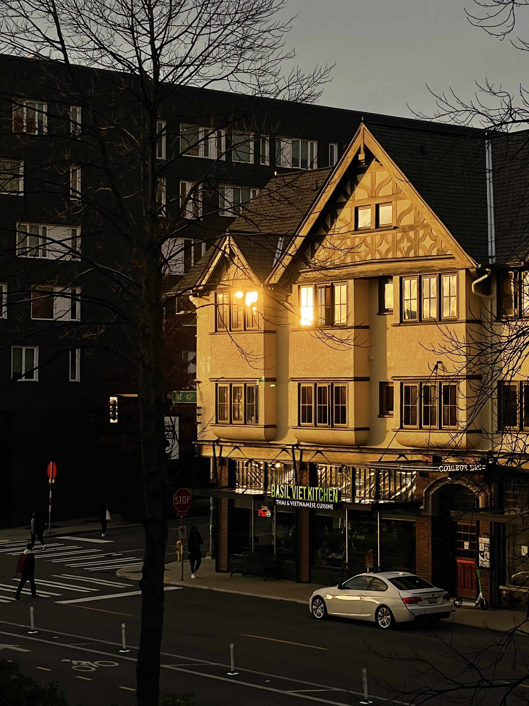
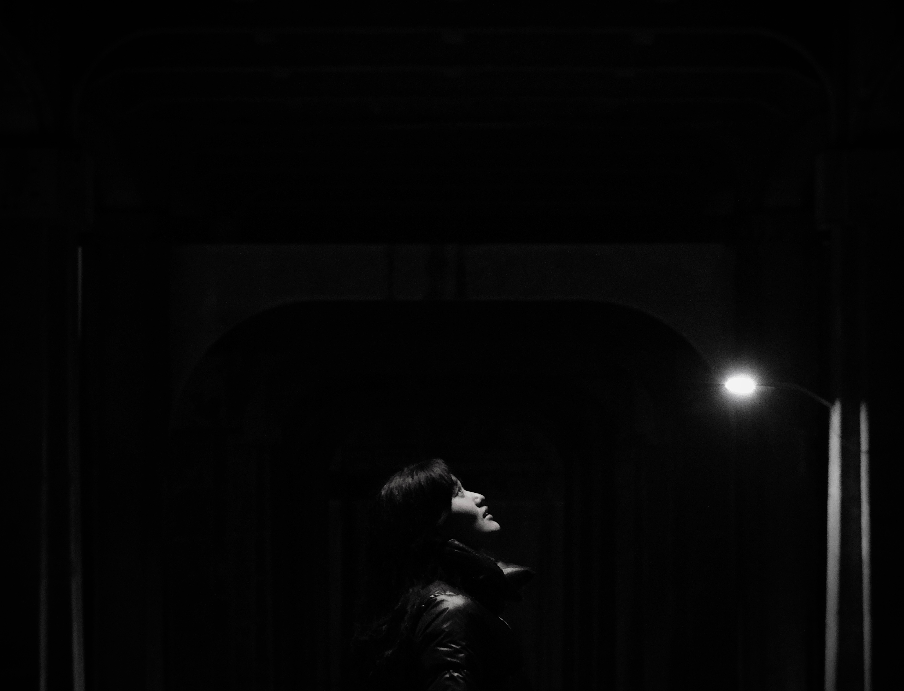
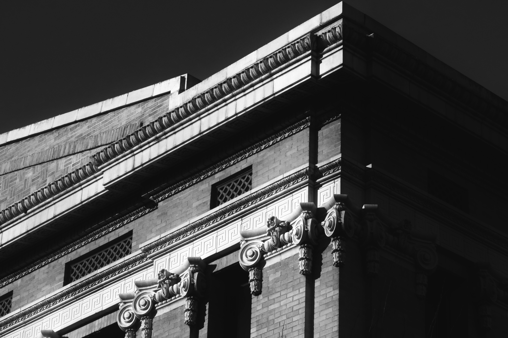

Capturing The World




About Me
Capturing moments has always been something I've cherished. Creating artwork such as drawing, making models on a computer, and simply taking pictures on my phone. I wanted to capture places and moments with immaculate detail, that's recently I was finally able to get myself a high-quality camera. Phones have their own purposes and their cameras can only go so far. With my new camera, I'm now able to have pictures that captures every unique essence of what I take. These are some of my favorites both from using a phone camera, to using my high-quality one.
 Twitter
Twitter Instagram
Instagram LinkedIn
LinkedIn